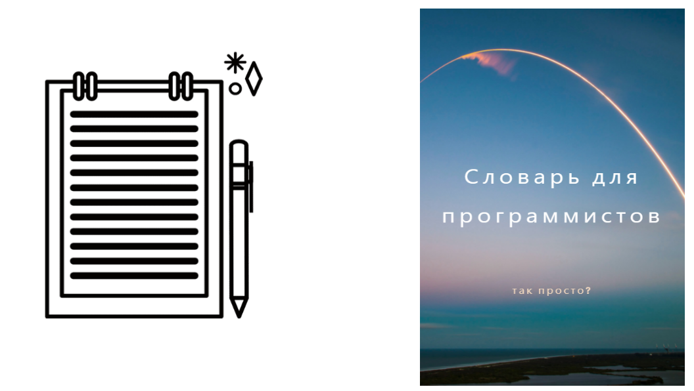
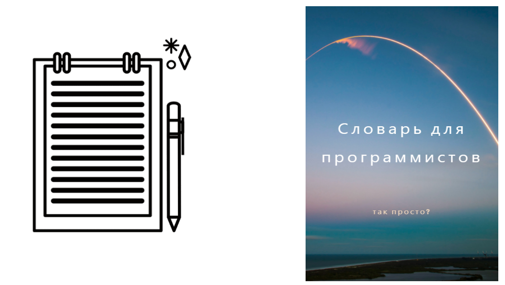
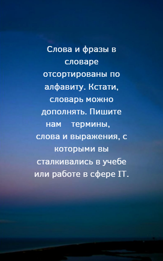

-IT (Information Technology) - информационные технологии.
— человек, который занимается (учится или работает) в сфере информационных технологий.
— этап разработки программного обеспечения, на котором разработчики добавляют в программу новые функции, а тестировщики испытывают программу. Это внутренний или непубличный этап.
— от анг. upgrade - обновление. Обычно обновление оборудования (например, компьютера).
— от анг. update - обновление данных. Обычно обновление программы, сайта и т.п.
— API, программный интерфейс приложения или интерфейс прикладного программирования.
— аутсорсинг, передача компанией части операционной деятельности другой компании.
— адаптивный дизайн, адаптация интерфейса к использованию на экранах с различным разрешеним (для мониторов ПК, планшетов, смартфонов).
— от англ. Bug — жучок, клоп. Ошибка в программе.
— что-то быстро сделать, изменить или дополнить функциональность приложения.
— бета-версия, приложение на стадии публичного тестирования.
— сокращение от «робот». Ботом называют программу, которая автоматизирует интерфейс. Пример — автоответчик в чате.
— от англ. Back-end. Программно-аппаратная или серверная часть приложения, невидимая обычным пользователям.
— резервная копия или процесс создания резервной копии приложения.
— от англ. Warning — предупреждение. Предупреждающее сообщение в интерфейсе.
— обозначает процесс переквалификации далёкого от сферы IT специалиста в IT-разработчика.
— сделать доступным для пользователей. Например, «выкатили новую версию сайта» значит сделали новую версию сайта доступной для пользователей.
— выпадающее меню (раскрывающееся), то же, что и "дропдаун" (от dropdown).
— компания, в которой платят низкие зарплаты и не ценят разработчиков.
— система контроля версий Git или сервис GitHub.
— плохо написанный, неправильно отформатированный, некачественный код.
— тот, кто пишет говнокод.
— плавный переход из одного цвета в другой.
— в веб-разработке так называют системы управления контентом (CMS).
— поиск и устранение ошибок, багов в коде.
— (от англ. demonstration — демонстрация) - жанр компьютерного искусства, представляющий собой мультимедийную презентацию. Демки создаются в целях демонстрации возможностей и знаний в области программирования, компьютерной графики и пр.
— развёртывание, публикация рабочей версии приложения. Пример: задеплоить сайт — перенести сайт с тестового на рабочий сервер, сделать его доступным для пользователей.
— от англ. Junior. Младший (юный) разработчик. Специалист без опыта или с минимальным опытом работы.
— презрительно-снисходительное название дизайнера.
— от англ DRY, don’t repeat yourself. Принцип программирования, предлагающий избегать повторений кода.
— (от dropdown) выпадающее меню, то же, что и «выпадашка».
— язык программирования Java.
— скрипты при программирований JavaScript.
— загрузить. Например, «залить файлы на сервер».
— сделать что-то, добавить какую-то функциональность.
— язык программирования Python.
— файлы, в которых находится исходный код приложения, или сам исходный код.
— повторение. «Мы сделали несколько итераций» — мы повторили шаг несколько раз.
— от англ. To commit — совершать. В контексте работы над приложением — сохранять код в репозитории.
— сокращенно от "конференция".
- это лицо, которое, наполняя сайт контентом, использует частично либо полностью контент (тексты, видео, аудио, фото) из посторонних источников, не внося в материал своих изменений. По сути копипастер является сознательным нарушителем авторских прав, который ворует чужое.
— код, который нужен, чтобы исправить несовершенство ранее написанного кода.
— программа, позволяющая осуществить взлом программного обеспечения. Как правило, кряк пригоден для массового использования. По сути, кряк является воплощением одного из видов взлома, зачастую, это обычный патч.
— от англ. Library — библиотека. Речь идет о библиотеках кода, например, React.
— общее нарицательное название программ, которые анализируют код и предупреждают разработчика об ошибках.
— от англ. List — список.
— локальный. Например, локальный сервер или сеть.
— от анг. loser - неудачник. Тот, кто постоянно испытывает неудачи в любом деле, за которое берётся.
— от англ. Middle — средний. Уровень разработчика, следующий за джуниором. Опыт и уровень знаний миддла позволяет ему самостоятельно решать серьезные задачи.
— от англ. Merge - склеивать. Речь идет об объединении или слиянии веток кода.
— от англ. Mention — упоминание. Речь идёт об упоминаниях в чатах или соцсетях. «Менши меня, когда будет готово» значит «упомяни меня, когда будет готово».
— опытный профессионал, который помогает менее опытному человеку в учебе, работе, даёт советы, подсказки и т.д.
—навигационный блок на сайте или в интерфейсе программы.
— внести изменения, задеплоить новую версию приложения. Противоположное термину «откатить».
— сокращенно от слова "ноутбук" - переносной персональный компьютер.
— переработка после окончания рабочего дня. Сверхурочные часы.
— человек, который не является айтишником/программистом, но работает в сфере IT/программирования. Например, специалист по кадрам (HR), бухгалтер, финансист.
— программное обеспечение/софт с открытым исходным кодом, который может использовать/дополнять/изменять любой желающий. В большинстве случаев это программное обеспечение является некоммерческим проектом.
— офис открытого типа, где сотрудники работают в одном помещении (относительно большом) без каких-либо перегородок/стен.
— оперативная память, она же «RAM» = «Random Access Memory», она же «ОЗУ» = «Оперативное Запоминающее Устройство».
— программное обеспечение, которое позволяет управлять аппаратной частью компьютеров/ноутбуков/смартфонов и т.д. (например, Windows, MacOS, Linux, Android и т.п.)
— удалить изменения, вернуть предыдущую версию приложения. Противоположное термину «накатить».
— этап в разработке программного обеспечения, на котором выполняется поиск и исправление ошибок.
— программа, с помощью которой выполняется отладка.
— операционная система.
— любое сообщение не по теме. Обычно такие сообщения удаляются, а пользователи, которые их добавляют - блокируются.
— ироничное название стажёра или джуниора.
- информация, предназначенная для автоматизированного внесения определённых изменений в компьютерные файлы. Применение патча иногда называется «пропатчиванием».
— пробная (пилотная) версия продукта.
-сокращенно от анг. "PC" - Personal Computer - персональный компьютер.
— то же, что и «футер». Элемент структуры веб-страницы, который находится в нижней части и содержит служебную информацию.
— некорректное отображение страницы в браузере.
— обозначение кода для рабочей версии приложении.
— использовать команду push, публиковать что-то.
— язык программирования PHP, то же, что и «пэхапэ».
— тот, кто пишет код на языке PHP. Считается низшим сословием в среде программистов.
— программное обеспечение на стадии публичного использования. Стабильная версия программы, которая прошла тестирование.
— описание процесса с помощью самого процесса. Например, выражение «рекурсивный вызов функции» описывает ситуацию, в которой функция вызывает сама себя.
— репозиторий, хранилище данных. Например, код программы можно хранить в репозитории на GitHub.
— файл Readme, в котором содержится информация о программе.
— от английского Subject — (субъект), тема, предмет. «По сабжу» — по теме обсуждения.
— от английского Sidebar — (боковая панель). Элемент веб-страницы, обычно располагается в стороне от основного содержимого страницы (контента). Чаще всего содержит какое-либо меню или список.
— (от switch) - переключатель. Также - устройство-коммутатор, т.е. распределительный узел для сетевых устройств, но с расширенными функциями.
— модульная сетка, используется для дизайна и вёрстки страниц.
— от англ. Senior — старший разработчик, программист (после джуниора и мидла).
— от англ. Skill — навык, мастерство, умение - способность независимо выполнять некоторое действие, основанное на целесообразном использовании человеком приобретённых знаний и навыков. Предусматривает использование ранее приобретённого опыта и знаний.
-термин, используемый для описания любителей, кто пользуется скриптами или программами, разработанными другими, для атаки компьютерных систем и сетей или дефейсу сайтов, не понимая механизма их действия.
— сломалось.
— удалить (обычно ОС, программу, код и т.д.).
— собеседование.
— от англ. Soft skills — знания и качества специалиста, прямо не связанные с профессиональной деятельностью. Примеры: коммуникабельность, проактивность.
— от английского template — шаблон.
— специалист по тестированию программного обеспечения.
— сокращенно от английского Team leader — командный лидер, руководитель. Координатор группы программистов.
— сборник уроков для обучения чему-либо, учебник, руководство.
— вспомогательное программное обеспечение, предназначенное для выполнения вспомогательных работ, настройки системного оборудования, операционных систем и прочего. Другими словами, программа, которая помогает что-то сделать.
— антивирус (антивирусник), который защищает компьютер от вирусов. С английского означает «горящая стена» — здесь следует понимать стену, которая защищает другие здания от распространения пожара. Другое название — Brandmauer (в переводе с немецкого тоже означает «горящая стена»).
— неудача, провал, облом. Зачастую подразумеваются более-менее серьёзные ошибки.
— от англ. Feedback — обратная связь.
- взлом телефонов и мобильных сетей с целью получения бесплатных звонков.
— свободнозанятый человек, который работает на себя, т.е. занимается фрилансом.
— от англ. Front-end — клиентская часть веб-приложения или сайта (обычно написаны на HTML/CSS/JS).
— мероприятие, на котором собираются специалисты из разных отраслей разработки программного обеспечения (чаще всего программисты, но могут быть и дизайнеры, тестеры) для разработки определённого решения/проекта/приложения/программы. Другими словами, марафоны программирования, на которые собираются программисты попрограммировать.
- особа, которая пытается получить несанкционированный доступ к компьютерным системам, как правило, с целью получения секретной (скрытой от посторонних) информации.
— технические знания и навыки.
— статически прописывать в коде данные, которые должны вычисляться динамически. Плохая практика, антипаттерн в программировании.
— ироничное название начинающего специалиста, который считает себя опытным программистом. От английского hacker и cool hacker.
— элемент структуры веб-страницы, находится в верхней части и обычно содержит логотип, меню, служебную информацию.
— центральный процессор (он же «проц» или «процик»).
— content management system, система управления контентом.
— Cascading Style Sheets, каскадные таблицы стилей, используются для стилизации (визуального оформления) веб-страниц.
— вредоносная программа, способная выполнять свой код через найденную уязвимость в другой программе.
— любая кнопка. Часто, при установке или загрузке чего-либо, нас просят “Press any key” — отсюда и термин.
— неопытный пользователь, который не знает, что ему нужно делать — ищет кнопку «эникей». Или низкоквалифицированный IT-специалист (очень редко программист), который занимается рутинными, несложными заданиями.
— от английского to use — использовать.
— пользователь (обычно любитель бесцельно проводить время, сидя за писей).
— язык программирования Java.
— (или джава-скрипт) язык программирования JavaScript.
— язык программирования.
